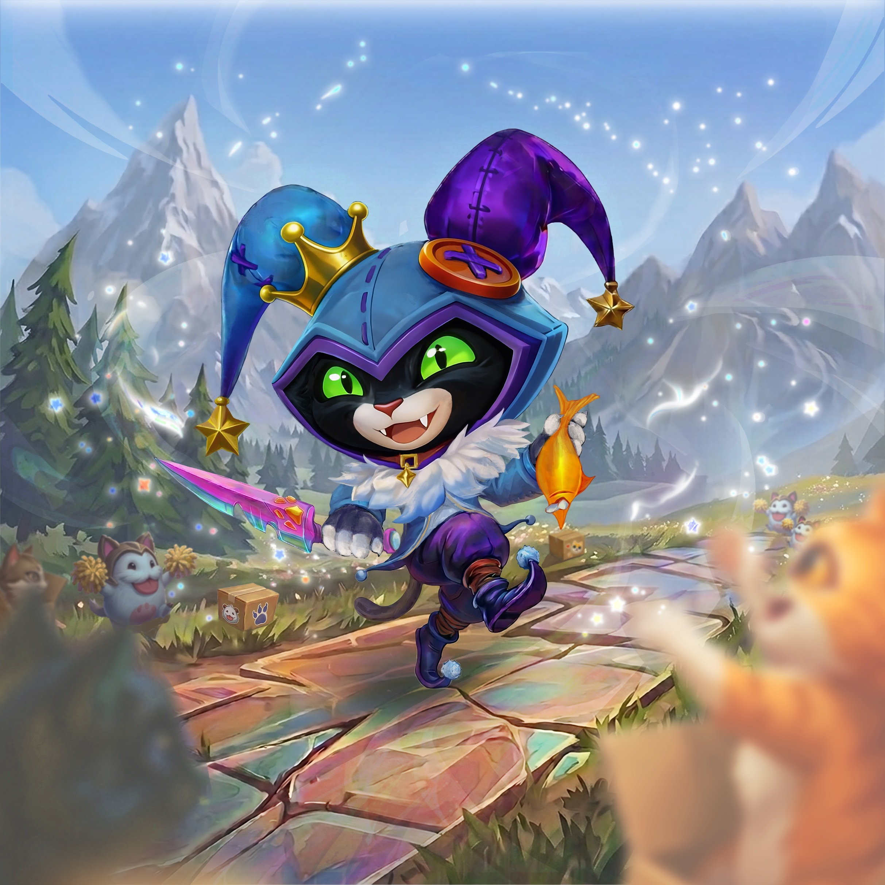

A playful 3D animation bringing the mischievous League of Legends character Shaco into a whimsical cat-themed world. This project combined character animation, particle effects, and stylized rendering to create an engaging short-form content piece.